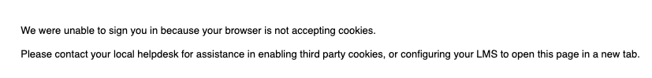
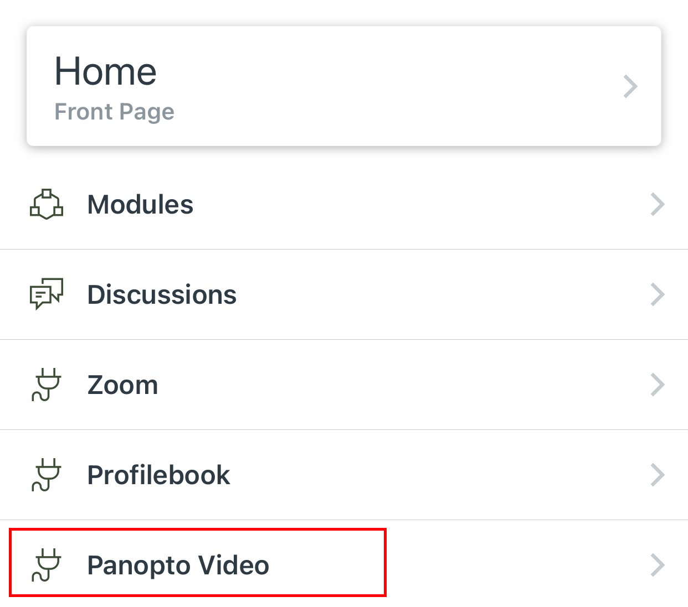

Frequently Asked Questions
For SFU Beedie Panopto specific questions, please contact your Panopto Admin team:
diliara_nasirova@sfu.ca for ExecED & undergrad
instructors.
crstech@sfu.ca for Grad Program instructors.
Video materials in this course are hosted by SFU Beedie’s video provider, Panopto Video. With Panopto Video, instructors and students can record multimedia presentations as homework assignments using their laptop, tablet, or smartphone.
Click Panopto Video on the left navigation in your Canvas course container. This will automatically activate your account and sign you in to the Panopto Video platform.
If a video is not loading, please follow these steps to troubleshoot.
Your issue could be Bandwidth Requirements. Please see
hereto learn about our viewing requirements, and then do a speed test to ensure your download speed is greater than the requirements.
Your issue could be quality. In the bottom right-hand corner of your Panopto video, select Quality (Figure 1). Then select
Automatic from the options that appear to see if this fixes the issue (Figure 2).
If you encounter the following error message: “We were unable to sign you in because your browser is not accepting cookies”. Please enable third-party cookies in your browser settings or use a different browser. If this issue persists, please contact your instructor and they will connect you to the Panopto admin team.
Canvas Student App
Please navigate to Panopto Video from the course main menu. Please, note, this will only enable you to watch course videos from your mobile device. The "create & submit video assignments" feature is not available on a mobile device in Canvas Student App.
Canvas on a mobile browser
If Panopto Video is not available, please use a mobile browser (such as Google Chrome, Apple Safari) to access this course. Please, also ensure that you enable third party cookies on your mobile browser settings (Links to an external site.) AND restart your browser. If this issue persists, please contact your instructor and they will connect you to Panopto admin team.